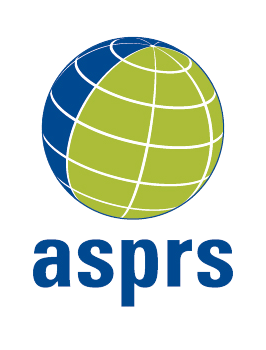
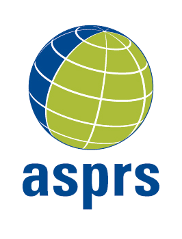
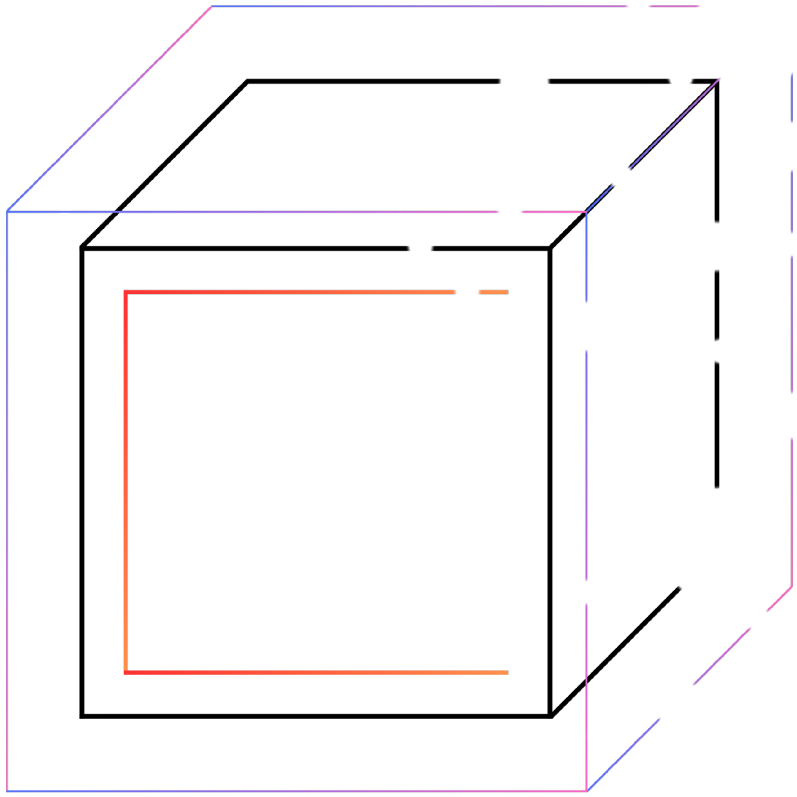

🙋🏻 About Me

Graduate Student at NYU CUSP
- Urban Data Science & Remote Sensing
DarkSky Advocate
Amateur Photographer
Cat Parent
Hi! I am Ruoyu Li (李若愚 Lǐ, RuòYú), an advocate for the
dark sky movement and
responsible outdoor lighting.
I have experience working with startups and NGOs, and am currently a graduate student in urban data science at
 NYU CUSP (Center for Urban Science + Progress).
I serve as an Engagement Volunteer at
NYU CUSP (Center for Urban Science + Progress).
I serve as an Engagement Volunteer at
 DarkSky International, lead the
DarkSky International, lead the
 DarkSky New York chapter and the Beijing chapter, and co-founded the Shenzhen chapter. I'm also the treasurer of the NYU chapter of ASPRS (American Society for Photogrammetry and Remote Sensing), and a member of the Student Committee and the Open Tech Committee at
DarkSky New York chapter and the Beijing chapter, and co-founded the Shenzhen chapter. I'm also the treasurer of the NYU chapter of ASPRS (American Society for Photogrammetry and Remote Sensing), and a member of the Student Committee and the Open Tech Committee at
 GISMO (NYC GeoSpatial Information Systems and Mapping Organization).
I am passionate about using data to drive urban sustainability and enhance community engagement.
GISMO (NYC GeoSpatial Information Systems and Mapping Organization).
I am passionate about using data to drive urban sustainability and enhance community engagement.
I graduated from the
 University of Arizona with a B.S. in
Mathematics, and a B.S. in
Information Science, with minors in
Statistics and Data Science,
Computer Science, and
Finance, along with a certificate in
Entrepreneurship and New Venture Development.
I also earned a
Graduate Certificate in Advanced Business from
University of Arizona with a B.S. in
Mathematics, and a B.S. in
Information Science, with minors in
Statistics and Data Science,
Computer Science, and
Finance, along with a certificate in
Entrepreneurship and New Venture Development.
I also earned a
Graduate Certificate in Advanced Business from
 Columbia University
and the Credential of Readiness (CORe) from
Columbia University
and the Credential of Readiness (CORe) from
 Harvard Business School Online.
Harvard Business School Online.
In my free time, I enjoy photography, astronomy, and spending time with my two lovely cats.
I also love exploring new technologies and how they can be applied in urban environments.
📄 Resume

✨ Let's connect! ✨
